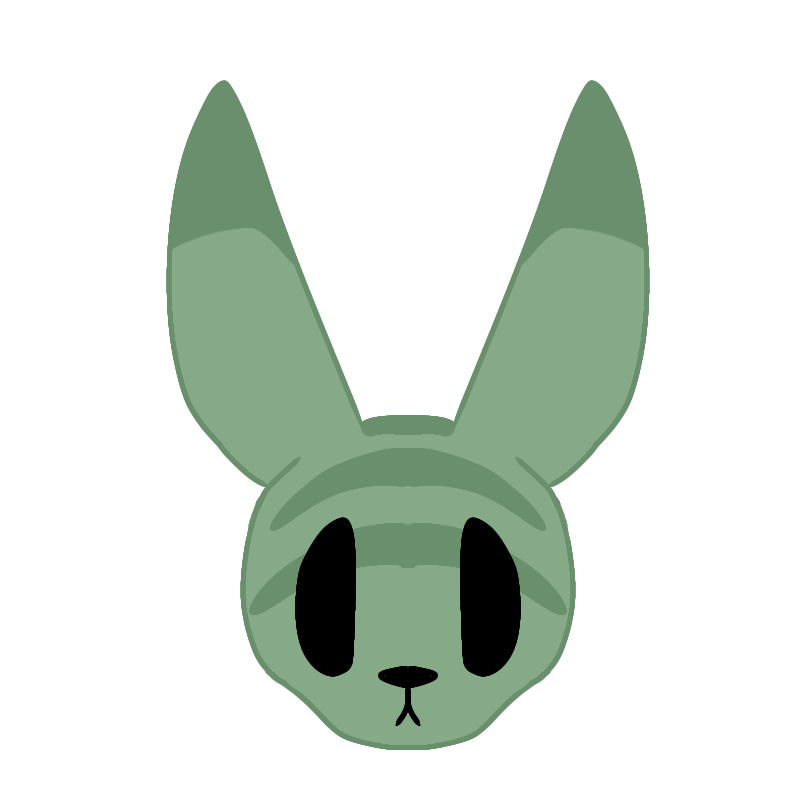

Seeker
Age: Juvenile-Subadult Pronouns: She/Her
Age: Juvenile-Subadult Pronouns: She/Her

A young slugcat, on a mission to find her mother. While playful and curious, life in the wilderness has turned her into a battlehardened hunter, able to easily take down the largest of creatures with help from her loyal companion, Helpful. This place is strange to her; So many creatures peacefully coexisting in one place. She has yet to decide what to do during her stay here.
Seeker is featured in Round 3, where she is an Investigator. Along with Berry, she carried the town to victory, easily rooting out evildoers with the information she gathered.